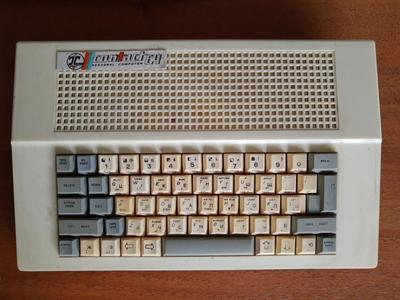
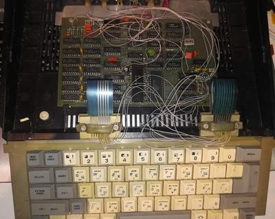
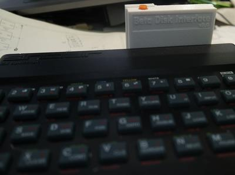

Марио Game & Watch доломали
Вышло то обещанное видео про хак. Увы, во внешнем флэше действительно хранятся только ромы игр. Шифрование оказалось банальной ксоркой.

Вышло то обещанное видео про хак. Увы, во внешнем флэше действительно хранятся только ромы игр. Шифрование оказалось банальной ксоркой.
Сегодня вышло переиздание Nintendo Game&Watch с Super Mario Bros внутри. А ещё там внутри STM32H7B (280 МГц, мегабайт памяти, 128 килобайт флэша). Микроконтроллеры STM32 захватывают мир, иначе не скажешь.
Не менее удивительно то, что консоль уже взломана. Причём ещё вчера, то есть до официальной премьеры. Помните, как про SNES Mini шутили, что это будет первая консоль, выпущенная уже взломанной (из-за того, что железо такое же, как у уже хакнутой NES Mini, вышедшей на год раньше)? А тут кажется, что и без шуток так и есть.
Детали неизвестны, но хакер (https://twitter.com/ghidraninja/status/1326855097083686917) нашел отладочный разъем SWD и смог достучаться до чипа. Тот, конечно, оказался защищен от считывания прошивки, однако взломщик мог читать содержимое оперативной памяти в процессе работы приставки, плюс ещё до этого он смог сдампить расположенный на плате внешний 8-мегабайтный флэш, в котором хранилось что-то зашифрованное. Из твиттера хакера следует, что он пытался найти где-нибудь в ОЗУ ключ шифрования, и это ему, вероятно, удалось. Остаётся непонятным, что именно хранится во внутреннем флэше STM32, а что во внешней микросхеме. От этого сильно зависит, что можно сделать со взломанной приставкой. Если окажется, что эмулятор лежит в защищенной части, а в расшифрованном дампе расположены только ромы игр, то всё, что мы сможем - это лишь заменить игры на другие.
Детали обещают в ближайшее время в видео. Ну а пока можно посмотреть гикпорн про разборку консоли.
https://www.youtube.com/watch?v=MHNYZxZGJuE
В ВК в комментах под прошлым постом я удивлялся, что какие-то производители в 90-е решил делать "Ленинград" с пленочной 58-кнопочной клавой. Просто потому, что такая клавиатура стоила, наверное, дороже самой собранной платы "ленина".
А потом я решил разобрать свой недавно купленный Contact-64. Угадайте, что там оказалось внутри? 😃

Печалька. Я-то думал, это такой же Contact-64, как те, которые описаны на просторах интернета - с посадочными местами под расширенную память и AY-3-8910. Его можно было бы превратить в Contact-128 практически без колхоза и резки дорожек. А оказался пятый "Ленинград" в коллекцию 🤔

2020 начинает исправляться! Я несколько лет назад тоже экспериментировал с пистолетом и эмулятором. Добился работоспособности, но уж очень нестабильной. Решил, что проблема в том, что ЖК экран в силу конструкции излучает свет даже окрашенными в черный участками, поэтому разница в яркости между черным и белым цветом недостаточна для уверенного распознавания. Но, возможно, дело было просто в низкой чувствительности АЦП ардуины. У STM32 она на два порядка лучше.
Собрал бетадиск, сделал корпус. В TR-DOS выходит, осталось дисковод прицепить.

Вышла новая (и очень обновленная) версия отличной программы для практически любых манипуляций с TAP-файлами. Теперь в ней, например, можно напрямую сейвы Элиты с реала писать через линейный вход сразу в TAP-ки!
Ой-ой-ой, так Jay and Silent Bob: Mall Brawl, как оказалось, не стилизация, а действительно игра для NES! Насмотрелся стрима и тоже прошел сейчас. Правда, с читами, а то там довольно хардкорно.
https://www.youtube.com/watch?v=DcbiTYGHzss
Вот так выглядит Z80 в корпусе QFP (с суффиксом FEC), запаянный на место, предназначенное под корпус LQFP (AEG). Чтобы он влез, пришлось все ноги загнуть вниз прямо у корня (ну и от души навалить припоя, конечно). А все потому, что AEG фиг где купишь. Получилось не так и плохо, зазор до платы всего миллиметр.
Это я Карабас-нано свой дособирал до матраса. Дальше оставалось поставить ПЗУ, но тут внезапно оказалось, что ноги у флэшей серий 29xxx/39xxx (которые я и хотел поставить) идут совсем не в том порядке, как у 27C512 (под которую сделана плата). Причем такая засада только в корпусе PLCC. Ведь в DIP чтоб заменить ПЗУ спектрума на микруху биоса из старой материнки, на последней достаточно было кинуть навесом пару перемычек — я так тест-ПЗУ себе делал, когда программатора не было. И это при том, что у них разное количество ног! Что мешало сделать совместимую распиновку в PLCC — непонятно.


Откопал у родителей раритет. Да, я был мажор с 3.5" дисководом. Правда, это был уже 1997-й год.

Это только корпус, он вскрыт, а сам диск зачем-то вынут. Но это и спасло дискетку, ведь все рабочие я продал вместе с дисководом когда увидел эмуляторы и решил, что реалы не нужны.
По напечатенному на ней телефону действительно давали справки, причем обо всём на свете. Например, однажды я звонил и спрашивал, почему программка
`` ORG 40000 LD A, #FF LD (16384), A RET ``
после ассемблирования M80 получается размером почти в 40 килобайт. Ведь о том, что в CP/M все программы обязаны начинаться с адреса #100, я тогда ещё не знал. В итоге ассемблер генерировал 39 с лишним килобайт NOP-ов перед 6 байтами собственно программы 😄
{kind=link}
{kind=link}
{kind=link}
{kind=link}